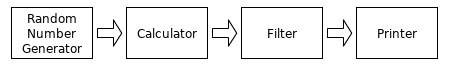

Channel Use Cases
Before reading this article, please read the article
channels in Go,
which explains channel types and values in detail.
New gophers may need to read that article and the current one several times
to master Go channel programming.
The remaining of this article will show many channel use cases.
I hope this article will convince you that
-
asynchronous and concurrency programming with Go channels is easy and enjoyable.
-
the channel synchronization technique has a wider range of uses
and has more variations than the synchronization solutions used in some other languages,
such as the actor model
and the async/await pattern.
Please note that the intention of this article is to show
as many channel use cases as possible.
We should know that channel is not the only concurrency synchronization technique supported in Go,
and for some cases, the channel way may not be the best solution.
Please read atomic operations and
some other synchronization techniques
for more concurrency synchronization techniques in Go.
Use Channels as Futures/Promises
Futures and promises are used in many other popular languages.
They are often associated with requests and responses.
Return receive-only channels as results
In the following example, the values of two arguments of the
sumSquares function call are requested concurrently.
Each of the two channel receive operations will block until
a send operation performs on the corresponding channel.
It takes about three seconds instead of six seconds to return the final result.
package main
import (
"time"
"math/rand"
"fmt"
)
func longTimeRequest() <-chan int32 {
r := make(chan int32)
go func() {
// Simulate a workload.
time.Sleep(time.Second * 3)
r <- rand.Int31n(100)
}()
return r
}
func sumSquares(a, b int32) int32 {
return a*a + b*b
}
func main() {
rand.Seed(time.Now().UnixNano())
a, b := longTimeRequest(), longTimeRequest()
fmt.Println(sumSquares(<-a, <-b))
}
Pass send-only channels as arguments
Same as the last example,
in the following example, the values of two arguments of the
sumSquares function call are requested concurrently.
Different to the last example, the longTimeRequest function
takes a send-only channel as parameter instead of
returning a receive-only channel result.
package main
import (
"time"
"math/rand"
"fmt"
)
func longTimeRequest(r chan<- int32) {
// Simulate a workload.
time.Sleep(time.Second * 3)
r <- rand.Int31n(100)
}
func sumSquares(a, b int32) int32 {
return a*a + b*b
}
func main() {
rand.Seed(time.Now().UnixNano())
ra, rb := make(chan int32), make(chan int32)
go longTimeRequest(ra)
go longTimeRequest(rb)
fmt.Println(sumSquares(<-ra, <-rb))
}
In fact, for the above-specified example,
we don't need two channels to transfer results.
Using one channel is okay.
...
// The channel can be buffered or not.
results := make(chan int32, 2)
go longTimeRequest(results)
go longTimeRequest(results)
fmt.Println(sumSquares(<-results, <-results))
}
This is kind of data aggregation which will be introduced specially below.
The first response wins
This is the enhancement of the using-only-one-channel variant in the last example.
Sometimes, a piece of data can be received from several sources to avoid high latencies.
For a lot of factors, the response durations of these sources may vary much.
Even for a specified source, its response durations are also not constant.
To make the response duration as short as possible,
we can send a request to every source in a separated goroutine.
Only the first response will be used, other slower ones will be discarded.
Note, if there are N sources, the capacity of
the communication channel must be at least N-1,
to avoid the goroutines corresponding the discarded responses being blocked for ever.
package main
import (
"fmt"
"time"
"math/rand"
)
func source(c chan<- int32) {
ra, rb := rand.Int31(), rand.Intn(3) + 1
// Sleep 1s/2s/3s.
time.Sleep(time.Duration(rb) * time.Second)
c <- ra
}
func main() {
rand.Seed(time.Now().UnixNano())
startTime := time.Now()
// c must be a buffered channel.
c := make(chan int32, 5)
for i := 0; i < cap(c); i++ {
go source(c)
}
// Only the first response will be used.
rnd := <- c
fmt.Println(time.Since(startTime))
fmt.Println(rnd)
}
There are some other ways to implement the first-response-win use case,
by using the select mechanism and a buffered channel
whose capacity is one. Other ways will be introduced below.
More request-response variants
The parameter and result channels can be buffered so that
the response sides won't need to wait for the request sides
to take out the transferred values.
Sometimes, a request is not guaranteed to be responded back a valid value.
For all kinds of reasons, an error may be returned instead.
For such cases, we can use a struct type like
struct{v T; err error} or a blank interface type
as the channel element type.
Sometimes, for some reasons, the response may need
a much longer time than the expected to arrive, or will never arrive.
We can use the timeout mechanism introduced below
to handle such circumstances.
Sometimes, a sequence of values may be returned from the response side,
this is kind of the data flow mechanism mentioned later below.
Use Channels for Notifications
Notifications can be viewed as special requests/responses
in which the responded values are not important.
Generally, we use the blank struct type struct{}
as the element types of the notification channels,
for the size of type struct{} is zero,
hence values of struct{} doesn't consume memory.
1-To-1 notification by sending a value to a channel
If there are no values to be received from a channel,
then the next receive operation on the channel will block
until another goroutine sends a value to the channel.
So we can send a value to a channel to notify another goroutine
which is waiting to receive a value from the same channel.
In the following example, the channel
done
is used as a signal channel to do notifications.
package main
import (
"crypto/rand"
"fmt"
"os"
"sort"
)
func main() {
values := make([]byte, 32 * 1024 * 1024)
if _, err := rand.Read(values); err != nil {
fmt.Println(err)
os.Exit(1)
}
done := make(chan struct{})
go func() { // the sorting goroutine
sort.Slice(values, func(i, j int) bool {
return values[i] < values[j]
})
// Notify sorting is done.
done <- struct{}{}
}()
// do some other things ...
<- done // waiting here for notification
fmt.Println(values[0], values[len(values)-1])
}
1-To-1 notification by receiving a value from a channel
If the value buffer queue of a channel is full
(the buffer queue of an unbuffered channel is always full),
a send operation on the channel will block
until another goroutine receives a value from the channel.
So we can receive a value from a channel to notify another goroutine
which is waiting to send a value to the same channel.
Generally, the channel should be an unbuffered channel.
This notification way is used much less common than
the way introduced in the last example.
package main
import (
"fmt"
"time"
)
func main() {
// The signal channel
done := make(chan struct{})
go func() {
fmt.Print("Hello")
// Simulate a workload.
time.Sleep(time.Second * 2)
// Receive a value from the done
// channel, to unblock the second
// send in main goroutine.
<- done
}()
// Blocked here, wait for a notification.
done <- struct{}{}
fmt.Println(" world!")
}
In fact, there are no fundamental differences between
receiving or sending values to make notifications.
It is just that the slowers notify the fasters waiting for notifications.
N-To-1 and 1-To-N notifications
By extending the above two use cases a little,
it is easy to do N-To-1 and 1-To-N notifications.
package main
import "log"
import "time"
type T = struct{}
func worker(id int, ready <-chan T, done chan<- T) {
<-ready // block here and wait a notification
log.Print("Worker#", id, " starts.")
// Simulate a workload.
time.Sleep(time.Second * time.Duration(id+1))
log.Print("Worker#", id, " job done.")
// Notify the main goroutine (N-to-1),
done <- T{}
}
func main() {
log.SetFlags(0)
ready, done := make(chan T), make(chan T)
go worker(0, ready, done)
go worker(1, ready, done)
go worker(2, ready, done)
// Simulate an initialization phase.
time.Sleep(time.Second * 3 / 2)
// 1-to-N notifications.
ready <- T{}; ready <- T{}; ready <- T{}
// Being N-to-1 notified.
<-done; <-done; <-done
}
In fact, the ways to do 1-to-N and N-to-1 notifications introduced
in this sub-section are not used commonly in practice.
In practice, we often use sync.WaitGroup to do N-to-1 notifications,
and we do 1-to-N notifications by close channels.
Please read the next sub-section for details.
Broadcast (1-To-N) notifications by closing a channel
The way to do 1-to-N notifications shown in the last sub-section
is seldom used in practice, for there is a better way.
By making using of the feature that infinite values can be received from
a closed channel, we can close a channel to broadcast notifications.
By the example in the last sub-section,
we can replace the three channel send operations
ready <- struct{}{} in the last example
with one channel close operation
close(ready)
to do an 1-to-N notifications.
...
close(ready) // broadcast notifications
...
Surely, we can also close a channel to do a 1-to-1 notification.
In fact, this is the most used notification way in Go.
The feature that infinite values can be received from a closed channel
will be utilized in many other use cases introduced below.
Timer: scheduled notification
It is easy to use channels to implement one-time timers.
A custom one-time timer implementation:
package main
import (
"fmt"
"time"
)
func AfterDuration(d time.Duration) <- chan struct{} {
c := make(chan struct{}, 1)
go func() {
time.Sleep(d)
c <- struct{}{}
}()
return c
}
func main() {
fmt.Println("Hi!")
<- AfterDuration(time.Second)
fmt.Println("Hello!")
<- AfterDuration(time.Second)
fmt.Println("Bye!")
}
In fact, the After function in the time standard
package provides the same functionality, with a much more efficient implementation.
We should use that function instead to make the code look clean.
Please note, <-time.After(aDuration) will make the current goroutine
enter blocking state, but a time.Sleep(aDuration) function call will not.
The use of <-time.After(aDuration) is often used
in the timeout mechanism which will be introduced below.
Use Channels as Mutex Locks
One of the above examples has mentioned that one-capacity buffered channels
can be used as one-time
binary semaphore.
In fact, such channels can also be used as multi-time binary semaphores,
a.k.a., mutex locks, though such mutex locks are not efficient as
the mutexes provided in the sync standard package.
There are two manners to use one-capacity buffered channels as mutex locks.
-
Lock through a send, unlock through a receive.
-
Lock through a receive, unlock through a send.
The following is a lock-through-send example.
package main
import "fmt"
func main() {
// The capacity must be one.
mutex := make(chan struct{}, 1)
counter := 0
increase := func() {
mutex <- struct{}{} // lock
counter++
<-mutex // unlock
}
increase1000 := func(done chan<- struct{}) {
for i := 0; i < 1000; i++ {
increase()
}
done <- struct{}{}
}
done := make(chan struct{})
go increase1000(done)
go increase1000(done)
<-done; <-done
fmt.Println(counter) // 2000
}
The following is a lock-through-receive example.
It just shows the modified part based on the above lock-through-send example.
...
func main() {
mutex := make(chan struct{}, 1)
mutex <- struct{}{} // this line is needed.
counter := 0
increase := func() {
<-mutex // lock
counter++
mutex <- struct{}{} // unlock
}
...
Use Channels as Counting Semaphores
Buffered channels can be used as
counting semaphores.
Counting semaphores can be viewed as multi-owner locks.
If the capacity of a channel is N, then it can be viewed as
a lock which can have most N owners at any time.
Binary semaphores (mutexes) are special counting semaphores,
each of binary semaphores can have at most one owner at any time.
Counting semaphores are often used to enforce a maximum number of concurrent requests.
Like using channels as mutexes,
there are also two manners to acquire one piece of ownership
of a channel semaphore.
-
Acquire ownership through a send, release through a receive.
-
Acquire ownership through a receive, release through a send.
An example of acquiring ownership through receiving values from a channel.
package main
import (
"log"
"time"
"math/rand"
)
type Seat int
type Bar chan Seat
func (bar Bar) ServeCustomer(c int) {
log.Print("customer#", c, " enters the bar")
seat := <- bar // need a seat to drink
log.Print("++ customer#", c, " drinks at seat#", seat)
time.Sleep(time.Second * time.Duration(2 + rand.Intn(6)))
log.Print("-- customer#", c, " frees seat#", seat)
bar <- seat // free seat and leave the bar
}
func main() {
rand.Seed(time.Now().UnixNano())
// the bar has 10 seats.
bar24x7 := make(Bar, 10)
// Place seats in an bar.
for seatId := 0; seatId < cap(bar24x7); seatId++ {
// None of the sends will block.
bar24x7 <- Seat(seatId)
}
for customerId := 0; ; customerId++ {
time.Sleep(time.Second)
go bar24x7.ServeCustomer(customerId)
}
// sleeping != blocking
for {time.Sleep(time.Second)}
}
In the above example, only the customers each of whom get a seat can drink.
So there will be most ten customers are drinking at any given time.
The last for loop in the main function
is to avoid the program exiting.
There is a better way, which will be introduced below, to do the job.
In the above example,
although there will be most ten customers are drinking at any given time,
there may be more than ten customers are served at the bar at the same time.
Some customers are waiting for free seats.
Although each customer goroutine consumes much fewer resources than a system thread,
the total resources consumed by a large number of goroutines are not negligible.
So it is best to create a customer goroutine only if there is an available seat.
... // same code as the above example
func (bar Bar) ServeCustomerAtSeat(c int, seat Seat) {
log.Print("customer#", c, " drinks at seat#", seat)
time.Sleep(time.Second * time.Duration(2 + rand.Intn(6)))
log.Print("<- customer#", c, " frees seat#", seat)
bar <- seat // free seat and leave the bar
}
func main() {
rand.Seed(time.Now().UnixNano())
bar24x7 := make(Bar, 10)
for seatId := 0; seatId < cap(bar24x7); seatId++ {
bar24x7 <- Seat(seatId)
}
for customerId := 0; ; customerId++ {
time.Sleep(time.Second)
// Need a seat to serve next customer.
seat := <- bar24x7
go bar24x7.ServeCustomerAtSeat(customerId, seat)
}
for {time.Sleep(time.Second)}
}
There will be at most about ten live customer goroutines
coexisting in the above-optimized version.
The manner of acquiring ownership through sending is simpler comparatively.
There is no step of placing seats.
package main
import (
"log"
"time"
"math/rand"
)
type Customer struct{id int}
type Bar chan Customer
func (bar Bar) ServeCustomer(c Customer) {
log.Print("++ customer#", c.id, " starts drinking")
time.Sleep(time.Second * time.Duration(3 + rand.Intn(16)))
log.Print("-- customer#", c.id, " leaves the bar")
<- bar // leaves the bar and save a space
}
func main() {
rand.Seed(time.Now().UnixNano())
// The bar can serve most 10 customers
// at the same time.
bar24x7 := make(Bar, 10)
for customerId := 0; ; customerId++ {
time.Sleep(time.Second * 2)
customer := Customer{customerId}
// Wait to enter the bar.
bar24x7 <- customer
go bar24x7.ServeCustomer(customer)
}
for {time.Sleep(time.Second)}
}
Dialogue (Ping-Pong)
Two goroutines can dialogue through a channel.
The following is an example which will print a series of Fibonacci numbers.
package main
import "fmt"
import "time"
import "os"
type Ball uint64
func Play(playerName string, table chan Ball) {
var lastValue Ball = 1
for {
ball := <- table // get the ball
fmt.Println(playerName, ball)
ball += lastValue
if ball < lastValue { // overflow
os.Exit(0)
}
lastValue = ball
table <- ball // bat back the ball
time.Sleep(time.Second)
}
}
func main() {
table := make(chan Ball)
go func() {
table <- 1 // throw ball on table
}()
go Play("A:", table)
Play("B:", table)
}
Channel Encapsulated in Channel
Sometimes, we can use a channel type as the element type of another channel type.
In the following example,
<-chan chan<- int is a receive-only channel type
which element type is a send-only channel type
chan<- int.
package main
import "fmt"
var counter = func (n int) chan<- chan<- int {
requests := make(chan chan<- int)
go func() {
for request := range requests {
if request == nil {
n++ // increase
} else {
request <- n // take out
}
}
}()
// Implicitly converted to chan<- (chan<- int)
return requests
}(0)
func main() {
increase1000 := func(done chan<- struct{}) {
for i := 0; i < 1000; i++ {
counter <- nil
}
done <- struct{}{}
}
done := make(chan struct{})
go increase1000(done)
go increase1000(done)
<-done; <-done
request := make(chan int, 1)
counter <- request
fmt.Println(<-request) // 2000
}
Although here the encapsulation implementation may be not
the most efficient way for the above-specified example,
the use case may be useful for some other scenarios.
Check Lengths and Capacities of Channels
We can use the built-in functions len and cap
to check the length and capacity of a channel.
However, we seldom do this in practice.
The reason for we seldom use the len function to check the length
of a channel is the length of the channel may have changed after the
len function call returns.
The reason for we seldom use the cap function to check the capacity
of a channel is the capacity of the channel is often known or not important.
However, there do have some scenarios we need to use the two functions.
For example, sometimes, we want to receive all the values buffered in
a non-closed channel
c which no ones will send values to any more,
then we can use the following code to receive remaining values.
// Assume the current goroutine is the only
// goroutine tries to receive values from
// the channel c at present.
for len(c) > 0 {
value := <-c
// use value ...
}
We can also use the try-receive mechanism introduced below to do the same job.
The efficiencies of the two ways are almost the same.
The advantage of the try-receive mechanism is the current goroutine is not required to be the only receiving goroutine.
Sometimes, a goroutine may want to write some values to a buffered channel
c until it is full without entering blocking state at the end,
and the goroutine is the only sender of the channel,
then we can use the following code to do this job.
for len(c) < cap(c) {
c <- aValue
}
Surely, we can also use the try-send mechanism introduced below to do the same job.
Block the Current Goroutine Forever
The select mechanism is a unique feature in Go.
It brings many patterns and tricks for concurrent programming.
About the code execution rules of the select mechanism,
please read the article channels in Go.
We can use a blank select block select{}
to block the current goroutine for ever.
This is the simplest use case of the select mechanism.
In fact, some uses of for {time.Sleep(time.Second)}
in some above examples can be replaced with select{}.
Generally, select{} is used to prevent the main goroutine from
exiting, for if the main goroutine exits, the whole program will also exit.
An example:
package main
import "runtime"
func DoSomething() {
for {
// do something ...
runtime.Gosched() // avoid being greedy
}
}
func main() {
go DoSomething()
go DoSomething()
select{}
}
By the way, there are some other ways
to make a goroutine stay in blocking state for ever.
But the select{} way is the simplest one.
Try-Send and Try-Receive
A
select block with one
default branch
and only one
case branch
is called a try-send or try-receive channel operation,
depending on whether the channel operation following the
case
keyword is a channel send or receive operation.
-
If the operation following the
case keyword is a send operation,
then the select block is called as try-send operation.
If the send operation would block,
then the default branch will get executed (fail to send),
otherwise, the send succeeds and
the only case branch will get executed.
-
If the operation following the
case keyword is a receive operation,
then the select block is called as try-receive operation.
If the receive operation would block,
then the default branch will get executed (fail to receive),
otherwise, the receive succeeds and
the only case branch will get executed.
Try-send and try-receive operations never block.
The standard Go compiler makes special optimizations for try-send
and try-receive select blocks, their execution efficiencies are
much higher than multi-case select blocks.
The following is an example which shows how try-send and try-receive work.
package main
import "fmt"
func main() {
type Book struct{id int}
bookshelf := make(chan Book, 3)
for i := 0; i < cap(bookshelf) * 2; i++ {
select {
case bookshelf <- Book{id: i}:
fmt.Println("succeeded to put book", i)
default:
fmt.Println("failed to put book")
}
}
for i := 0; i < cap(bookshelf) * 2; i++ {
select {
case book := <-bookshelf:
fmt.Println("succeeded to get book", book.id)
default:
fmt.Println("failed to get book")
}
}
}
The output of the above program:
succeed to put book 0
succeed to put book 1
succeed to put book 2
failed to put book
failed to put book
failed to put book
succeed to get book 0
succeed to get book 1
succeed to get book 2
failed to get book
failed to get book
failed to get book
The following sub-sections will show more try-send and try-receive use cases.
Check if a channel is closed without blocking the current goroutine
Assume it is guaranteed that no values were ever (and will be) sent to a channel,
we can use the following code to (concurrently and safely) check whether or not
the channel is already closed without blocking the current goroutine,
where
T the element type of the corresponding channel type.
func IsClosed(c chan T) bool {
select {
case <-c:
return true
default:
}
return false
}
The way to check if a channel is closed is used popularly
in Go concurrent programming to check whether or not a notification has arrived.
The notification will be sent by closing the channel in another goroutine.
Peak/burst limiting
We can implement peak limiting by combining use channels as counting semaphores and try-send/try-receive.
Peak-limit (or burst-limit) is often used to limit the number of concurrent requests without blocking any requests.
The following is a modified version of the last example in the
use channels as counting semaphores section.
...
// Can serve most 10 customers at the same time
bar24x7 := make(Bar, 10)
for customerId := 0; ; customerId++ {
time.Sleep(time.Second)
customer := Consumer{customerId}
select {
case bar24x7 <- customer: // try to enter the bar
go bar24x7.ServeConsumer(customer)
default:
log.Print("customer#", customerId, " goes elsewhere")
}
}
...
Another way to implement the first-response-wins use case
As mentioned above, we can use the select mechanism (try-send)
with a buffered channel which capacity is one (at least) to implement
the first-response-wins use case. For example,
package main
import (
"fmt"
"math/rand"
"time"
)
func source(c chan<- int32) {
ra, rb := rand.Int31(), rand.Intn(3)+1
// Sleep 1s, 2s or 3s.
time.Sleep(time.Duration(rb) * time.Second)
select {
case c <- ra:
default:
}
}
func main() {
rand.Seed(time.Now().UnixNano())
// The capacity should be at least 1.
c := make(chan int32, 1)
for i := 0; i < 5; i++ {
go source(c)
}
rnd := <-c // only the first response is used
fmt.Println(rnd)
}
Please note, the capacity of the channel used in the above example
must be at least one, so that the first send won't be missed
if the receiver/request side has not gotten ready in time.
The third way to implement the first-response-wins use case
For a first-response-wins use case, if the number of sources is small,
for example, two or three, we can use a
select code block
to receive the source responses at the same time. For example,
package main
import (
"fmt"
"math/rand"
"time"
)
func source() <-chan int32 {
// c must be a buffered channel.
c := make(chan int32, 1)
go func() {
ra, rb := rand.Int31(), rand.Intn(3)+1
time.Sleep(time.Duration(rb) * time.Second)
c <- ra
}()
return c
}
func main() {
rand.Seed(time.Now().UnixNano())
var rnd int32
// Blocking here until one source responses.
select{
case rnd = <-source():
case rnd = <-source():
case rnd = <-source():
}
fmt.Println(rnd)
}
Note: if the channel used in the above example is an unbuffered channel,
then there will two goroutines hanging for ever after the select
code block is executed.
This is a memory leak case.
The two ways introduced in the current and the last sub-sections
can also be used to do N-to-1 notifications.
Timeout
In some request-response scenarios,
for all kinds of reasons, a request may need a long time to response,
sometimes even will never response.
For such cases, we should return an error message to the client side
by using a timeout solution.
Such a timeout solution can be implemented with the select mechanism.
The following code shows how to make a request with a timeout.
func requestWithTimeout(timeout time.Duration) (int, error) {
c := make(chan int)
// May need a long time to get the response.
go doRequest(c)
select {
case data := <-c:
return data, nil
case <-time.After(timeout):
return 0, errors.New("timeout")
}
}
Ticker
We can use the try-send mechanism to implement a ticker.
package main
import "fmt"
import "time"
func Tick(d time.Duration) <-chan struct{} {
// The capacity of c is best set as one.
c := make(chan struct{}, 1)
go func() {
for {
time.Sleep(d)
select {
case c <- struct{}{}:
default:
}
}
}()
return c
}
func main() {
t := time.Now()
for range Tick(time.Second) {
fmt.Println(time.Since(t))
}
}
In fact, there is a Tick function in the time
standard package provides the same functionality, with a much more efficient implementation.
We should use that function instead to make code look clean and run efficiently.
Rate Limiting
One of above section has shown how to use try-send to do peak limiting.
We can also use try-send to do rate limiting (with the help of a ticker).
In practice, rate-limit is often to avoid quota exceeding and resource exhaustion.
The following shows such an example borrowed from
the official Go wiki.
In this example, the number of handled requests in any one-minute duration will not exceed 200.
package main
import "fmt"
import "time"
type Request interface{}
func handle(r Request) {fmt.Println(r.(int))}
const RateLimitPeriod = time.Minute
const RateLimit = 200 // most 200 requests in one minute
func handleRequests(requests <-chan Request) {
quotas := make(chan time.Time, RateLimit)
go func() {
tick := time.NewTicker(RateLimitPeriod / RateLimit)
defer tick.Stop()
for t := range tick.C {
select {
case quotas <- t:
default:
}
}
}()
for r := range requests {
<-quotas
go handle(r)
}
}
func main() {
requests := make(chan Request)
go handleRequests(requests)
// time.Sleep(time.Minute)
for i := 0; ; i++ {requests <- i}
}
In practice, we often use rate-limit and peak/burst-limit together.
Switches
From the article channels in Go,
we have learned that sending a value to or receiving a value
from a nil channel are both blocking operations.
By making use of this fact, we can change the involved channels in
the case operations of a select code block
to affect the branch selection in the select code block.
The following is another ping-pong example which is implemented
by using the select mechanism.
In this example, one of the two channel variables involved
in the select block is
nil.
The
case branch corresponding the nil channel will not get selected for sure.
We can think such
case branches are in off status.
At the end of each loop step,
the on/off statuses of the two
case branches are switched.
package main
import "fmt"
import "time"
import "os"
type Ball uint8
func Play(playerName string, table chan Ball, serve bool) {
var receive, send chan Ball
if serve {
receive, send = nil, table
} else {
receive, send = table, nil
}
var lastValue Ball = 1
for {
select {
case send <- lastValue:
case value := <- receive:
fmt.Println(playerName, value)
value += lastValue
if value < lastValue { // overflow
os.Exit(0)
}
lastValue = value
}
// Switch on/off.
receive, send = send, receive
time.Sleep(time.Second)
}
}
func main() {
table := make(chan Ball)
go Play("A:", table, false)
Play("B:", table, true)
}
Control code execution possibility weights
We can duplicate a case branch in a select code block
to increase the execution possibility weigh of the corresponding code.
Example:
package main
import "fmt"
func main() {
foo, bar := make(chan struct{}), make(chan struct{})
close(foo); close(bar) // for demo purpose
x, y := 0.0, 0.0
f := func(){x++}
g := func(){y++}
for i := 0; i < 100000; i++ {
select {
case <-foo: f()
case <-foo: f()
case <-bar: g()
}
}
fmt.Println(x/y) // about 2
}
The possibility of the f function being called
is about the double of the g function being called.
Select from dynamic number of cases
Although the number of branches in a select block is fixed,
we can use the functionalities provided in the reflect
standard package to construct a select block at run time.
The dynamically created select block can have an arbitrary number of case branches.
But please note, the reflection way is less efficient than the fixed way.
The reflect standard package also provides
TrySend and TryRecv functions to
implement one-case-plus-default select blocks.
Data Flow Manipulations
This section will introduce some data flow manipulation use cases by using channels.
Generally, a data flow application consists of many modules.
Different modules do different jobs.
Each module may own one or several workers (goroutines),
which concurrently do the same job specified for that module.
Here is a list of some module job examples in practice:
-
data generation/collecting/loading.
-
data serving/saving.
-
data calculation/analysis.
-
data validation/filtering.
-
data aggregation/division
-
data composition/decomposition.
-
data duplication/proliferation.
A worker in a module may receive data from several other modules
as inputs and send data to serve other modules as outputs.
In other words, a module can be both a data consumer and a data producer.
A module which only sends data to some other modules but never
receives data from other modules is called a producer-only module.
A module which only receives data from some other modules but never
sends data to other modules is called a consumer-only module.
Many modules together form a data flow system.
The following will show some data flow module worker implementations.
These implementations are for explanation purpose,
so they are very simple and they may be not efficient.
Data generation/collecting/loading
There are all kinds of producer-only modules.
A producer-only module worker may produce a data stream
-
by loading a file, reading a database, or crawling the web.
-
by collecting all kinds of metrics from a software system or all kinds of hardware.
-
by generating random numbers.
-
etc.
Here, we use a random number generator as an example.
The generator function returns one result but takes no parameters.
import (
"crypto/rand"
"encoding/binary"
)
func RandomGenerator() <-chan uint64 {
c := make(chan uint64)
go func() {
rnds := make([]byte, 8)
for {
_, err := rand.Read(rnds)
if err != nil {
close(c)
}
c <- binary.BigEndian.Uint64(rnds)
}
}()
return c
}
In fact, the random number generator is a multi-return future/promise.
A data producer may close the output stream channel at any time
to end data generating.
Data aggregation
A data aggregation module worker aggregates several data streams
of the same data type into one stream.
Assume the data type is
int64,
then the following function will aggregate an arbitrary
number of data streams into one.
func Aggregator(inputs ...<-chan uint64) <-chan uint64 {
out := make(chan uint64)
for _, in := range inputs {
in := in // this line is essential
go func() {
for {
out <- <-in // <=> out <- (<-in)
}
}()
}
return out
}
A better implementation should consider whether or not
an input stream has been closed.
(Also valid for the following other module worker implementations.)
func Aggregator(inputs ...<-chan uint64) <-chan uint64 {
output := make(chan uint64)
var wg sync.WaitGroup
for _, in := range inputs {
wg.Add(1)
in := in // this line is essential
go func() {
for {
x, ok := <-in
if ok {
output <- x
} else {
wg.Done()
}
}
}()
}
go func() {
wg.Wait()
close(output)
}()
return output
}
If the number of aggregated data streams is very small (two or three),
we can use
select block to aggregate these data streams.
// Assume the number of input stream is two.
...
output := make(chan uint64)
go func() {
inA, inB := inputs[0], inputs[1]
for {
select {
case v := <- inA: output <- v
case v := <- inB: output <- v
}
}
}
...
Data division
A data division module worker does the opposite of
a data aggregation module worker.
It is easy to implement a division worker,
but in practice, division workers are not very useful and seldom used.
func Divisor(input <-chan uint64, outputs ...chan<- uint64) {
for _, out := range outputs {
out := out // this line is essential
go func() {
for {
out <- <-input // <=> out <- (<-input)
}
}()
}
}
Data composition
A data composition worker merges several pieces of data from different input data streams into one piece of data.
The following is a composition worker example, in which two
uint64
values from one stream and one
uint64 value from another stream
compose one new
uint64 value.
Surely, these stream channel element types are different generally in practice.
func Composor(inA, inB <-chan uint64) <-chan uint64 {
output := make(chan uint64)
go func() {
for {
a1, b, a2 := <-inA, <-inB, <-inA
output <- a1 ^ b & a2
}
}()
return output
}
Data decomposition
Data decomposition is the inverse process of data composition.
A decomposition worker function implementation takes one
input data stream parameter and returns several data stream results.
No examples will be shown for data decomposition here.
Data duplication/proliferation
Data duplication (proliferation) can be viewed as special data decompositions.
One piece of data will be duplicated and each of the duplicated data will
be sent to different output data streams.
An example:
func Duplicator(in <-chan uint64) (<-chan uint64, <-chan uint64) {
outA, outB := make(chan uint64), make(chan uint64)
go func() {
for {
x := <-in
outA <- x
outB <- x
}
}()
return outA, outB
}
Data calculation/analysis
The functionalities of data calculation and analysis modules vary and each is very specific.
Generally, a worker function of such modules transforms each piece of input data
into another piece of output data.
For simple demo purpose, here shows a worker example
which inverts every bit of each transferred
uint64 value.
func Calculator(in <-chan uint64, out chan uint64) (<-chan uint64) {
if out == nil {
out = make(chan uint64)
}
go func() {
for {
x := <-in
out <- ^x
}
}()
return out
}
Data validation/filtering
A data validation or filtering module discards
some transferred data in a stream.
For example, the following worker function discards all non-prime numbers.
import "math/big"
func Filter(input <-chan uint64, output chan uint64) <-chan uint64 {
if output == nil {
output = make(chan uint64)
}
go func() {
bigInt := big.NewInt(0)
for {
x := <-input
bigInt.SetUint64(x)
if bigInt.ProbablyPrime(1) {
output <- x
}
}
}()
return output
}
Data serving/saving
Generally, a data serving or saving module is the last or final output module
in a data flow system.
Here just provides a simple worker which prints each piece of data
received from the input stream.
import "fmt"
func Printer(input <-chan uint64) {
for {
x, ok := <-input
if ok {
fmt.Println(x)
} else {
return
}
}
}
Data flow system assembling
Now, let's use the above module worker functions
to assemble several data flow systems.
Assembling a data flow system is just to create some workers
of different modules, and specify the input streams for every worker.
Data flow system example 1 (a linear pipeline):
package main
... // the worker functions declared above.
func main() {
Printer(
Filter(
Calculator(
RandomGenerator(),
),
),
)
}
The above data flow system is depicted in the following diagram.

Data flow system example 2 (a directed acyclic graph pipeline):
package main
... // the worker functions declared above.
func main() {
filterA := Filter(RandomGenerator(), nil)
filterB := Filter(RandomGenerator(), nil)
filterC := Filter(RandomGenerator(), nil)
filter := Aggregator(filterA, filterB, filterC)
calculatorA := Calculator(filter, nil)
calculatorB := Calculator(filter, nil)
calculator := Aggregator(calculatorA, calculatorB)
Printer(calculator)
}
The above data flow system is depicted in the following diagram.
More complex data flow topology may be arbitrary graphs.
For example, a data flow system may have multiple final outputs.
But data flow systems with cyclic-graph topology are seldom used in reality.
From the above two examples, we can find that it is very easy
and intuitive to build data flow systems with channels.
From the last example, we can find that, with the help of aggregators,
it is easy to implement fan-in and fan-out for the number of workers for a specified module.
In fact, we can use a simple channel to replace the role of an aggregator.
For example, the following example replaces the two aggregators with two channels.
package main
... // the worker functions declared above.
func main() {
c1 := make(chan uint64, 100)
Filter(RandomGenerator(), c1) // filterA
Filter(RandomGenerator(), c1) // filterB
Filter(RandomGenerator(), c1) // filterC
c2 := make(chan uint64, 100)
Calculator(c1, c2) // calculatorA
Calculator(c1, c2) // calculatorB
Printer(c2)
}
The modified data flow system is depicted in the following diagram.
The above explanations for data flow systems don't consider much on
how to close data streams. Please read this
article for explanations on how to gracefully close channels.